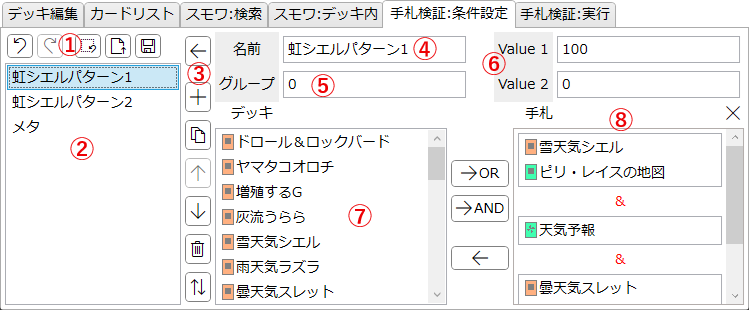
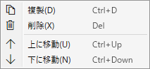
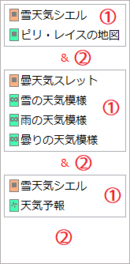

「手札検証:条件設定」タブ
現在のデッキにおける初手5枚の手札内容を検証する機能の、条件を設定するためのタブです。
このタブで設定した内容はアプリ設定に記憶され、次回以降の起動時に復元されます。
説明

-
エディットバー
- 条件項目の編集に関する操作を行うボタン群です。
-
 : 最後に行った編集操作を元に戻します。
: 最後に行った編集操作を元に戻します。
-
 : 最後に元に戻した編集操作をやり直します。
: 最後に元に戻した編集操作をやり直します。
- 元に戻す以外の操作を一度でも行うとやり直しはできなくなります。
-

: 全ての条件を削除します。 -
 : .jsonファイルを読み込んで、その内容を反映します。
: .jsonファイルを読み込んで、その内容を反映します。
-
 : この条件設定の内容を.jsonファイルとして保存します。
: この条件設定の内容を.jsonファイルとして保存します。
-
条件リスト
- 設定された条件項目が並びます。
- 項目を選択するとその内容が右側に表示されます。
-
項目の上で右クリックすると以下のメニューが開きます。各メニューの機能は下を参照してください。

-
条件項目の操作
-
: 右の条件設定の編集内容を左の項目に反映します。
- Ctrl+Enterを押すことでも反映できます。
- 「反映」せずに他の項目を選択すると編集内容は破棄されます。ご注意ください。
- : 選択されている項目のすぐ下に新たな条件を追加します。何も選択されていない場合はリストの末尾に追加されます。
- : 選択されている項目の複製を、その項目のすぐ下に追加します。
- : 選択されている項目を1つ上に移動します。検証の際には上にある条件ほど優先されます。
- : 選択されている項目を1つ下に移動します。検証の際には上にある条件ほど優先されます。
-
 : 選択されている項目を削除します。
: 選択されている項目を削除します。
-
 : 全ての条件項目を、グループ順に、同じグループ内では「Value 1」の大きい順に並び替えます。
: 全ての条件項目を、グループ順に、同じグループ内では「Value 1」の大きい順に並び替えます。
-
: 右の条件設定の編集内容を左の項目に反映します。
-
条件設定の名前
- この条件の名前です。
- 手札検証の結果を表示する際に使われます。
- 他の条件項目と同じ名前を付けることもできますが、基本的には異なる名前にしておくことを推奨します。
-
条件グループ
- 任意の整数を指定できます。
- マウスホイールを回すと1ずつ変更できます。
-
手札検証の際、同じグループの条件はリストの一番上にあるものから順に検証され、適合した場合それ以下の条件はスキップされます。
- 例えば上の画像において「虹シエルパターン1」と「虹シエルパターン2」を同じグループ(グループ0)にしておくと、「パターン1」が適合した場合には「パターン2」の検証はスキップされます。
-
異なるグループの条件はそれぞれ個別に検証されます。
- 例えば上の画像において「虹シエルパターン1」(グループ0)と「メタ」(グループ1)を異なるグループにしておくと、「パターン1」が適合したか否かによらず「メタ」の条件も必ず検証されます。
-
価値
- その条件が満たされた場合に発生する価値を設定します。
- マウスホイールを回すと5ずつ変更できます。
-
この値は手札検証で期待値が計算される際に使われます。
- この値を設定しなくても手札検証は利用できますが、手札の質を考慮したい場合は設定してください。
-
「Value 1」と「Value 2」は個別に計算されます。それぞれにどのような意味を持たせるかは利用者次第です。
- 一例として、先攻で引いた時の嬉しさを「Value 1」に、後攻で引いた時の嬉しさを「Value 2」にするとよいです。
-
候補リスト
- メインデッキに採用されているカードが一覧されます。
- Ctrlキーを押しながら項目をクリックすると複数選択を行います。
- Shiftキーを押しながら項目をクリックすると範囲選択を行います。
-
項目を右クリックするか、項目を選択した状態でボタンを押すと、そのカードを「手札リスト」に追加します。
- 右クリック、または「OR」を押した場合、選択中のサブリスト(なにも選択していない場合末尾のサブリスト)にそのカードを追加します。
- 「AND」を押すと新たにサブリストを作り、そこにそのカードを追加します。
- 項目は右側にドラッグ&ドロップすることでも手札リストに追加できます。
- より詳しい説明は下記手札リストの詳細を参照してください。
-
手札リスト
- 検証条件となる手札の状態を指定します。
- Ctrlキーを押しながら項目をクリックすると複数選択を行います。
- Shiftキーを押しながら項目をクリックすると範囲選択を行います。
- 「リセット」ボタンを押すとこのリストの内容を空欄にします。
- リストの内容はサブリストとなっており、各サブリストは&で繋がれています。
- サブリストの項目を右クリックするか、サブリストの項目を選択した状態でを押すと、そのカードをサブリストから削除します。
- より詳しい説明は下記手札リストの詳細を参照してください。
手札リストの詳細

-
サブリスト
- 手札のうち1枚がこのリスト内のいずれかであることを要請します。
-
候補リストからサブリストの枠内へ項目をドラッグ&ドロップすると、そのカードは該当のサブリストへ追加されます。
- 「OR」ボタンを押した場合も同じ挙動になります。
-
異なるサブリストには同じカードを含めることが可能です。
- 同じカードを含むサブリストが複数ある場合、それはそのカードをその数だけ手札に持っていることを要請します。
-
余白部分
- 手札リストの内容のうち、サブリストの枠の外である部分は単なる余白です。
- サブリストが複数ある場合、それぞれの間に&が表示されます。
-
候補リストから余白部分へ項目をドラッグ&ドロップすると、新たなサブリストが作られ、そのカードは新たなサブリストへ追加されます。
- 「AND」ボタンを押した場合も同じ挙動になります。
-
例
- 画像の例では、1つ目のサブリストは、「手札のうち1枚が《雪天気シエル》か《ピリ・レイスの地図》であること」を要請します。
- この画像ではサブリストが3つ存在する、すなわち手札要求3枚という意味になります。
-
この手札リストの「意味」は、以下のようなものになります。
- 手札のうち1枚は《雪天気シエル》か《ピリ・レイスの地図》である。
- 手札のうち1枚は《曇天気スレット》《雪の天気模様》《雨の天気模様》《曇りの天気模様》のいずれかである。
- 手札のうち1枚は《雪天気シエル》か《天気予報》である。
- 以上の条件を全て満たす。
-
具体的な手札状況と、この条件が適合するか否か
- 《シエル》《スレット》《天気予報》: 適合
- 《シエル》《雪模様》《天気予報》: 適合
- 《シエル》《シエル》《雨模様》: 適合
- 《スレット》《雪模様》《天気予報》: 不適
- 《シエル》《シエル》《天気予報》: 不適
- 《シエル》《雪模様》《雨模様》: 不適